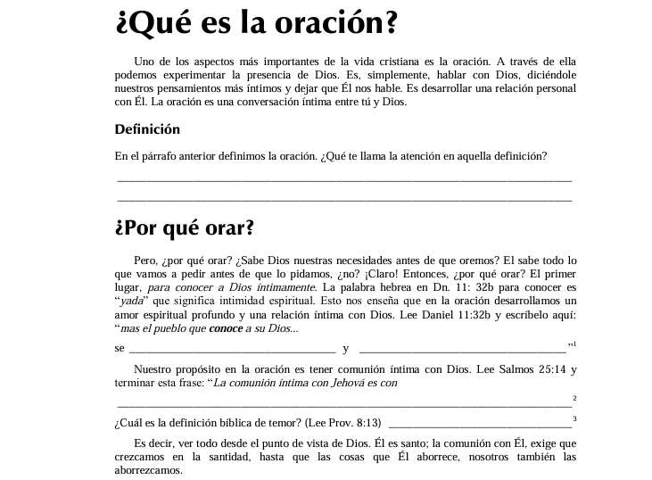
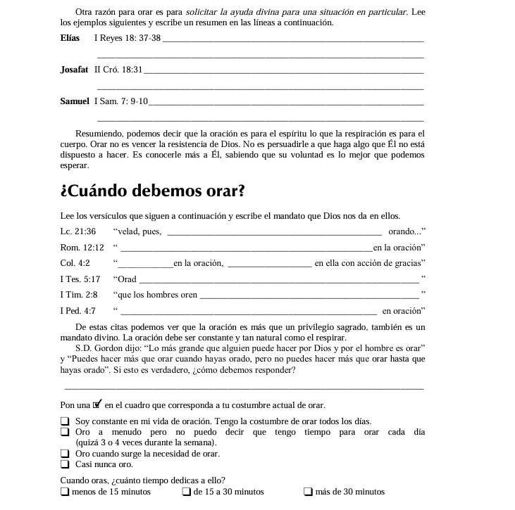
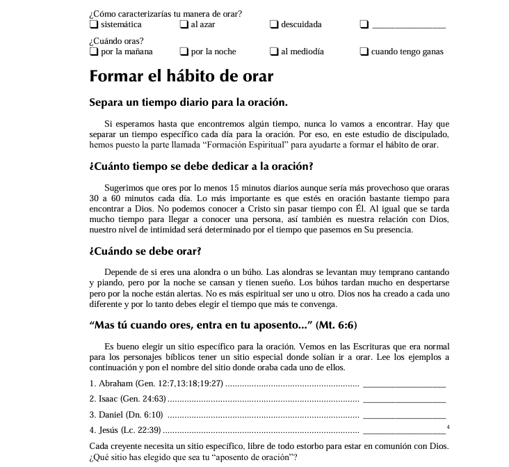
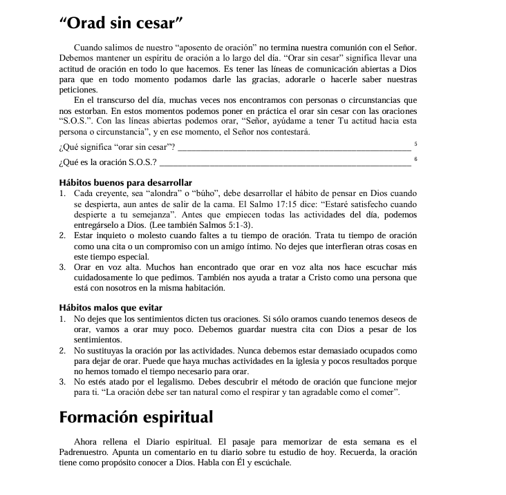

Lección 3
Día 1: ¿Qué es la oración?
Ayer consideramos los dos primeros requisitos del discipulado. ¿Te acuerdas cuáles eran?.
Ahora, veamos el tercer requisito: el compromiso total del discípulo con su Maestro.




La base Bíblica del discipulado
← Volver al menúAyer consideramos los dos primeros requisitos del discipulado. ¿Te acuerdas cuáles eran?.
Ahora, veamos el tercer requisito: el compromiso total del discípulo con su Maestro.